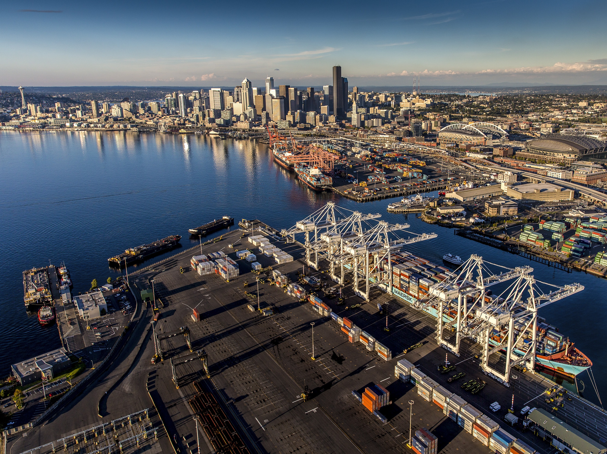

General City Information
- Population: 775,078
- Metro Area Population: 4,018,762
- Date Incorporated: December 2, 1869
- Classification: Urban
- Average Income Level: $121984.00 per household. Above state median of $94952.00
Seattle is the largest city in Washington State. Situated on the eastern shore of Puget Sound in Western WA at the foot of the Cascades, it offers beautiful vistas of the Olympic mountain range on either side of the sizeable body of saltwater. On clear days, prominent Cascade peaks such as Mt. Ranier can be seen from any of the city's impressive highrise buildings. It is a rainy climate home to lush plant life. The low elevation and insulation of the sea air makes temperatures relatively mild year-round. The city is notable for its many ports, markets, and billion-dollar companies. It is the cultural and economic center of Washington.
